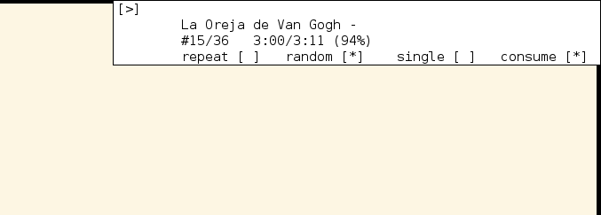
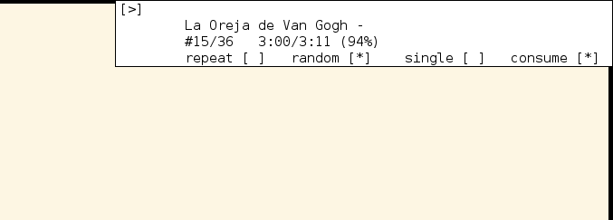

Ratpoison, Music Control
This is the first of a series of posts about the Ratpoison window manager.
Ratpoison’s ability to bind custom keys and run external scripts affords us some pretty neat flexibility. Let’s start with music and go further in future posts.
Some people use a graphical music players like Amarok or just play some Youtube videos, others prefer text players like MOC or CMUS, but we can reach the apex of flexibility by using a music daemon like MPD. Although you can reach out for a client like MPC, Ncmpcpp or Vimpc, you still need to interact with its interface, and that means briefly interrupting your workflow to control your music. We can do better.
Using Ratpoison’s key mapping functionality, we can define a sub-map bounded to a master key, so using the key m a range of music commands becomes available:
newkmap music
definekey music space exec ~/music_control.sh toggle
definekey music l exec ~/music_control.sh select_song
definekey music L exec ~/music_control.sh select_playlist
definekey music s exec ~/music_control.sh stop
definekey music i exec ~/music_control.sh information
definekey music n exec ~/music_control.sh next
definekey music p exec ~/music_control.sh previous
definekey music period exec ~/music_control.sh seek+
definekey music comma exec ~/music_control.sh seek-
definekey music greater exec ~/music_control.sh seek++
definekey music less exec ~/music_control.sh seek--
definekey music slash exec ~/music_control.sh search
definekey music r exec ~/music_control.sh playback repeat
definekey music z exec ~/music_control.sh playback random
definekey music y exec ~/music_control.sh playback single
definekey music c exec ~/music_control.sh playback consume
definekey music question help music
bind m readkey music
This snippet appears in my .ratpoisonrc file.
Here we define a keymap music and, at the end, bind it to the m key, so we can get to it with:
C-t m
Note that C-t is Ratpoison’s default escape sequence.
And then pressing the respective music command:
space Pause/Play
l Select song from playlist
L Select playlist
s Stop
i Playing information
n Next
p Previous
. seek forward
, seek backward
> seek forward more
< seek backward more
/ Search song (in the entire music repository)
r Toggle -repeat-
z Toggle -random-
y Toggle -single-
c Toggle -consume-
? Print binded keys help
So, for instance, we could visualize the current playing song, and modes state with:
C-t m i

Here, the first line represents the playing status:
[|] Paused
[>] Playing
The second line is the song currently playing/paused. The third line is the song number in the playlist and the time played/remaining. The fourth line displays the modes state.
This is the first of a series of posts about the Ratpoison window manager.
Ratpoison’s ability to bind custom keys and run external scripts affords us some pretty neat flexibility. Let’s start with music and go further in future posts.
Some people use a graphical music players like Amarok or just play some Youtube videos, others prefer text players like MOC or CMUS, but we can reach the apex of flexibility by using a music daemon like MPD. Although you can reach out for a client like MPC, Ncmpcpp or Vimpc, you still need to interact with its interface, and that means briefly interrupting your workflow to control your music. We can do better.
Using Ratpoison’s key mapping functionality, we can define a sub-map bounded to a master key, so using the key m a range of music commands becomes available:
newkmap music
definekey music space exec ~/music_control.sh toggle
definekey music l exec ~/music_control.sh select_song
definekey music L exec ~/music_control.sh select_playlist
definekey music s exec ~/music_control.sh stop
definekey music i exec ~/music_control.sh information
definekey music n exec ~/music_control.sh next
definekey music p exec ~/music_control.sh previous
definekey music period exec ~/music_control.sh seek+
definekey music comma exec ~/music_control.sh seek-
definekey music greater exec ~/music_control.sh seek++
definekey music less exec ~/music_control.sh seek--
definekey music slash exec ~/music_control.sh search
definekey music r exec ~/music_control.sh playback repeat
definekey music z exec ~/music_control.sh playback random
definekey music y exec ~/music_control.sh playback single
definekey music c exec ~/music_control.sh playback consume
definekey music question help music
bind m readkey musicThis snippet appears in my .ratpoisonrc file.
Here we define a keymap music and, at the end, bind it to the m key, so we can get to it with:
C-t mNote that C-t is Ratpoison’s default escape sequence.
And then pressing the respective music command:
space Pause/Play
l Select song from playlist
L Select playlist
s Stop
i Playing information
n Next
p Previous
. seek forward
, seek backward
> seek forward more
< seek backward more
/ Search song (in the entire music repository)
r Toggle -repeat-
z Toggle -random-
y Toggle -single-
c Toggle -consume-
? Print binded keys helpSo, for instance, we could visualize the current playing song, and modes state with:
C-t m i
Here, the first line represents the playing status:
[|] Paused
[>] PlayingThe second line is the song currently playing/paused. The third line is the song number in the playlist and the time played/remaining. The fourth line displays the modes state.